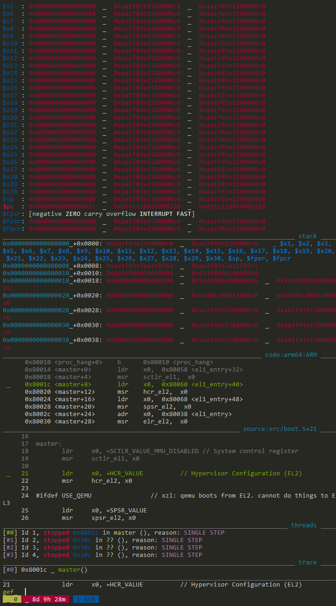

Using GDB to debug kernel
NOTE:
- Read the whole document before you attempt GDB.
- WSL users who want to develop on local machines instead of the server: gdbserver may not play well with WSL. See "troubleshooting" below. You are fine if you develop on the server.
GDB Installation
We've done this on the server already. Do this if developing on local machines (Linux or WSL).
sudo apt install gdb-multiarch gcc-aarch64-linux-gnu build-essential
Note: the gdb for aarch64 is NOT called aarch64-XXXX-gdb.
The workflow
Launch QEMU + the kernel and wait for the debugger
# will wait for gdb to connect at local tcp 1234
qemu-system-aarch64 -M raspi3 -kernel ./kernel8.img -serial null -serial stdio -s -S
# OR, will wait for gdb to connect at local tcp 5678
qemu-system-aarch64 -M raspi3 -kernel ./kernel8.img -serial null -serial stdio -gdb tcp::5678 -S
Explanation: -S not starting the guest until you tell it to from gdb. -s listening for an incoming connection from gdb on TCP port 1234
WARNING If multiple students run the first command on the server machine, they all attempt to listen on tcp port 1234. Only one will succeed. If you see such a failure, use the second form to specify a different TCP port number (not necessarily 5678 which may be in use as well).
xzl@granger1[~]$ netstat -tulpn|grep 5678
(Not all processes could be identified, non-owned process info
will not be shown, you would have to be root to see it all.)
tcp 0 0 0.0.0.0:5678 0.0.0.0:* LISTEN -
tcp6 0 0 :::5678 :::* LISTEN -
xzl@granger1[~]$ netstat -tulpn|grep 1234
(Not all processes could be identified, non-owned process info
will not be shown, you would have to be root to see it all.)
tcp 2 0 0.0.0.0:1234 0.0.0.0:* LISTEN -
tcp 0 0 127.0.0.1:12345 0.0.0.0:* LISTEN -
tcp 0 0 127.0.0.1:12346 0.0.0.0:* LISTEN -
tcp6 0 0 :::1234 :::* LISTEN -
Launch GDB
From another terminal
gdb-multiarch build/kernel8.elf
(gdb) target remote :1234
(gdb) layout asm
The port number (e.g. 1234) must match what you specified for QEMU.
Single step
(gdb) si

Dump register contents
(gdb) info reg

show reg information at each step. This example shows
(gdb) display/10i $sp

Dump memory
You can specify a symbol or a raw addr
... as instructions
x/20i _start
... as hex (bytes)
x/20xb _start
... as hex (words)
x/20xw _start
... as a textual string
x/s _start
x/s $x0
Print out variables/structures
print *mem_map
print the first 10 elements of mem_map, a pointer of type short*
print (short[10])*mem_map
Set a breakpoint at addr
b *0xffff0000
Function/source lookup
Look up type of a given symbol
ptype mem_map
Find out function name at a given addr
info line *0x10000000
List source at a given addr
list *0x10000000
list *fn
The GDB "dashboard" enhancement
The basic GDB UI is too primitive to beginners. We provide you an enhancement called GDB-dashboard. The upstream source is here. I adapted it for aarch64. Screenshot:

Installation
Grab from my repository:
wget -P ~ https://raw.githubusercontent.com/fxlin/gdb-dashboard-aarch64/master/.gdbinit
There's only one file: .gdbinit. It's the initial script that GDB will load upon start. The above line download it to your home directory.
Usage
All GDB commands still apply, e.g. "si" is single step per instruction; "b" is to set a breakpoint; "c" for continuing execution. See below for more.
The major features here are multiple views: for registers, stack, assembly, and source.
Customize
Open ~/.gdbinit. Go to near line 2500 where you can see initialization commands for GDB, e.g.
file build/kernel8.elf
target remote :1234
The port number (e.g. 1234) must match what you specified for QEMU.
GDB execute these commands whenever it starts, so you do not have to type them every time.
In the above example, GDB loads the ELF file kernel8.elf (only for parsing symbols and debugging info); it connects to a remote target at local port 1234.
Lines below customize gdb-dashboard behaviors, e.g.
dashboard source -style height 15
dashboard assembly -style height 8
These lines set the height of the "source" panel and the "assembly" panel.
The best documentation of gdb-dashboard seems from typing help dashboard in the GDB console. e.g. In GDB, type:
>>> help dashboard expressions
Cannot connect? See "troubleshooting" below.
Other enhancement (FYI)
GEF (https://github.com/hugsy/gef) is also viable. Both GEF and GDB-dashboard:
-
Both enhanced GDB significantly.
-
GEF understands aarch64 semantics (e.g. CPU flags) very well. It can even tell why a branch was taken/not taken. However, GEF does not parse aarch64 callstack properly (at least I cannot get it work).
-
GDB-dashboard nicely parses the callstack. It, however, does not display aarch64 registers properly.
GEF screenshot (note the CPU flags it recognized)

Troubleshooting
Cannot connect and need help? Report the following:
- Your QEMU version. i.e. the output of "qemu-system-aarch64 --version"
- Have you tried other kernel binaries, e.g. from p1exp1? And the binaries provided by us? https://github.com/fxlin/p1-kernel/releases
- The full commands you use to launch QEMU. Have you tried different port numbers?
- Launch GDB w/o loading .gdbinit:
gdb-multiarch -n
Then enter GDB commands manually, e.g. load, target remote, etc. Does the problem persist? What's the output?
- Attach screenshot(s) of the above steps, if possible.
WSL caveat:
"gdbserver: Target description specified unknown architecture “aarch64” https://stackoverflow.com/questions/53524546/gdbserver-target-description-specified-unknown-architecture-aarch64 It seems GDB server does not play well with WSL… be aware!
Reference
Launch qemu with gdb
https://en.wikibooks.org/wiki/QEMU/Debugging_with_QEMU#Launching_QEMU_from_GDB
more info about gdb for kernel debugging
https://wiki.osdev.org/Kernel_Debugging
Good article
https://interrupt.memfault.com/blog/advanced-gdb#source-files